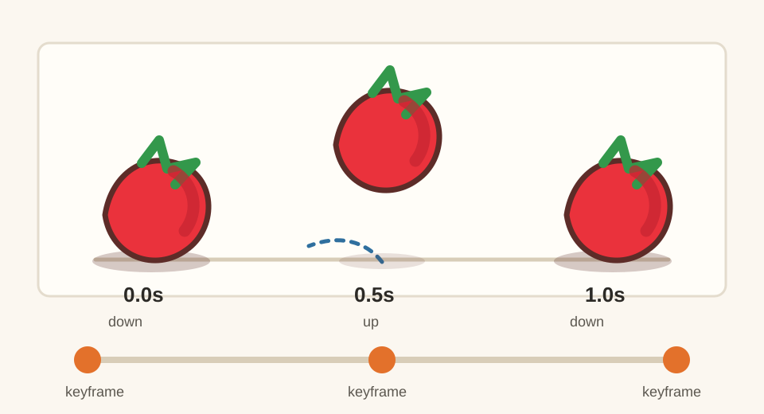

Day 13 - Week 3 bridge: animation
13First Timeline animation - a bouncing tomato loop
You have a growing set of static kitchen props. Today you make the first moving asset-pack proof: one tomato group that bounces with three position keyframes in Blockbench's Timeline.
One 1-second looping GIF: a low-poly tomato bouncing on a tiny counter tile, made from three keyframes: down, up, down.

Warm up - 30-second recall
Answer first, then open the cards.
What is the difference between rotating the camera and rotating an element?
Why did the tomato trio use Cluster Selection?
Why do we name parts in the Outliner?
The one new idea - keyframes save poses over time
An animation is not a different model. It is the same model with saved poses at different times. Each saved pose is a keyframe. Blockbench plays between those keyframes in the Timeline.
For the first animation, keep the idea tiny: save the tomato down at 0.0s, up at
0.5s, and down again at 1.0s. The first and last keyframes match, so the
loop can restart cleanly.
Do not animate every cube separately today. Put the moving tomato pieces in one group, then animate the group. One moving group is easier to understand than ten moving parts.
Settings tutorial - Animate mode and Timeline
Keep the First Animation
Cheatsheet open. Generic Model is OK for this lesson; the local Blockbench source marks it with
animation_mode: true.
| Control | Use it today for | Beginner-safe value |
|---|---|---|
| Animate mode | Enter the animation workspace. | Switch only after the static tomato is built. |
| Animations panel | Create and name the animation. | tomato_bounce, length 1.0s. |
| Timeline | Place and preview keyframes. | Use 0.0, 0.5, and 1.0 seconds. |
| Position keyframes | Move the whole tomato group up and down. | Animate Position only. Skip Rotation and Scale. |
| Looped Playback | Check the loop repeatedly. | On while previewing. |
Do it with me
-
New Generic Model - name it
Save early. This is a motion study, not a full new prop challenge.bouncing-tomato-loop -
Build a tiny counter tile
Add one flat cube as a simple base. Suggested size:X 5,Y 0.25,Z 4. Color it with the shared wood colors or reuse the Lesson-9 prep counter idea. -
Build one simple tomato above the tile
Use a low-poly mesh sphere if you are comfortable from Lesson 11, or use a chunky red cube if you want the fastest path. Add a tiny green stem. Keep it readable at thumbnail size. -
Group the moving tomato parts
Put the tomato body and stem into one Outliner group namedtomato_bounce_group. Leave the counter tile outside the group so the tile stays still. -
Switch to Animate mode
Use the mode switcher to enter Animate. If the Timeline is hidden, open View -> Panels -> Timeline. If the Animations panel is hidden, open View -> Panels -> Animations. -
Add one animation
In the Animations panel, add a new animation. Name ittomato_bounce. Set the length to1.0second if the length field appears. -
Select the moving group
Selecttomato_bounce_group. In the Timeline, you want to key the group, not the counter tile and not one small stem cube. -
Keyframe 1: down at
Move the Timeline playhead to0.0s0.0s. Add a Position keyframe for the tomato group. This saves the starting pose. -
Keyframe 2: up at
Move the playhead to0.5s0.5s. Move the tomato group up a small amount, aboutY +0.7. Add another Position keyframe. -
Keyframe 3: down at
Move the playhead to1.0s1.0s. Put the tomato back at the same position as0.0s. Add the final Position keyframe. Matching the first pose prevents a pop. -
Turn on Looped Playback and preview
Play the Timeline. The tomato should bounce up and return down, then repeat. If it jumps at the end, the1.0skeyframe does not match the0.0skeyframe. -
Add one optional squash illusion
Optional: at the down keyframes, make the tomato slightly wider and lower. Only do this if the simple bounce is already working. Save before experimenting. -
Export or capture a GIF
Capture a short looping GIF or screen recording of the Timeline playback. Keep the camera fixed so viewers notice the tomato movement, not the camera movement. -
Post your Day-13 update
Publish the GIF and a short note. Streak: Day 13.
For every loop, check this first: does the last keyframe match the first? If yes, the loop can repeat cleanly.
itch.io post (English):
RedNote / 小红书 (中文):
Quick self-check
Say the answer first, then open the card.
What is a keyframe?
Why animate the group instead of every cube?
Why should the first and last keyframes match?
If nothing moves during playback, what do you check first?
Use the First Animation Cheatsheet, plus the local UI atlas pages for Animation, Timeline, and Keyframe.
If the Timeline is missing, the tomato moves permanently, or the loop pops at the end, send me a screenshot of Animate mode and the Timeline. I can tell which keyframe step went wrong.